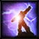

RPS · 贼 + 暗牧 + 恢复萨 3v3
这组唯一要记住的一句
暗牧把三条血线都变成债，
贼挑最先露头的一条结算，恢复萨让对面的回答落不了地。
贼挑最先露头的一条结算，恢复萨让对面的回答落不了地。
它不是哪一组的换皮
RMP 先选击杀目标再做完整 setup；RPS 先用暗牧 DoT 压三条血线，谁先露出防守缺口，贼才把窗口压过去。
暗牧逼治疗花动作驱散与抬血；治疗一忙，贼就有更干净的眩晕窗。贼逼出防守后，DoT 又继续收剩下的血线。

恢复萨不是旁观治疗他负责让反手失效▸风剪断大治疗，根基吃关键法术，净化拆增益。RPS 的第三人不是补血机器，是答案过滤器。
三个人的分工
挑结算目标。不是开局认死一个人；看谁的防守先少、谁被 DoT 压出位置，再把他钉在眩晕里。
制造全场债务。DoT 铺多人，用沉默封住治疗驱散；贼决定哪一条血线在这一轮被结算。
阻断反手。风剪、根基、净化让对面的救人法术与增益落不了地，同时保住暗牧的施法位置。
耦合点
暗牧决定谁开始欠血，贼决定谁现在还债，恢复萨决定对面能不能延期。三个人分别处理压力、结算与反手。